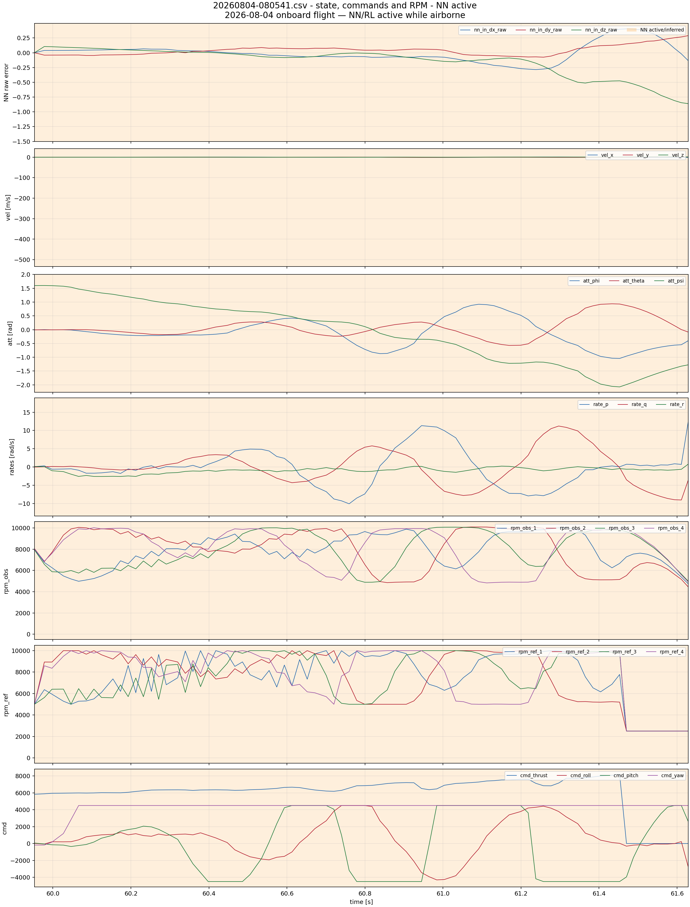
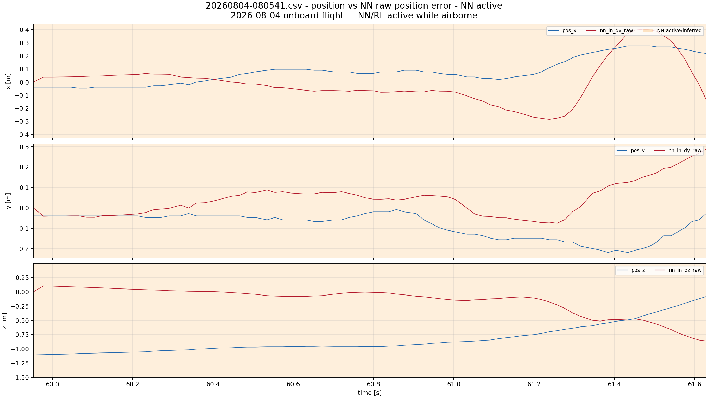
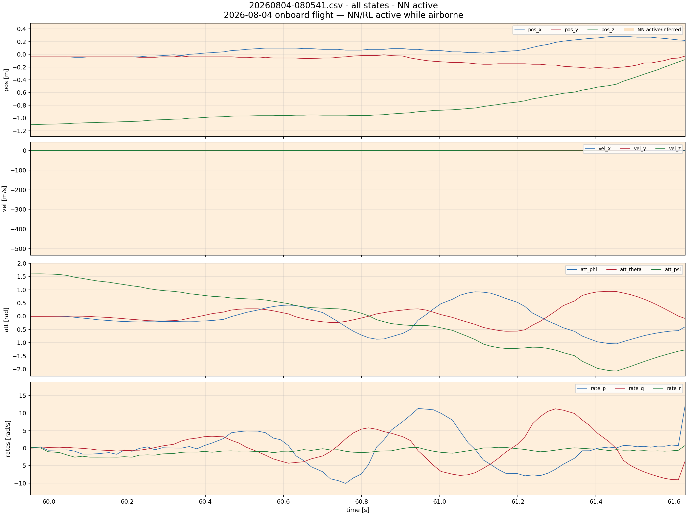
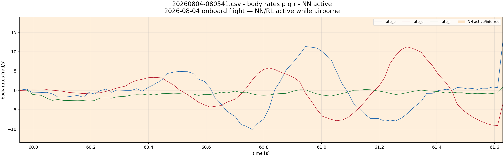
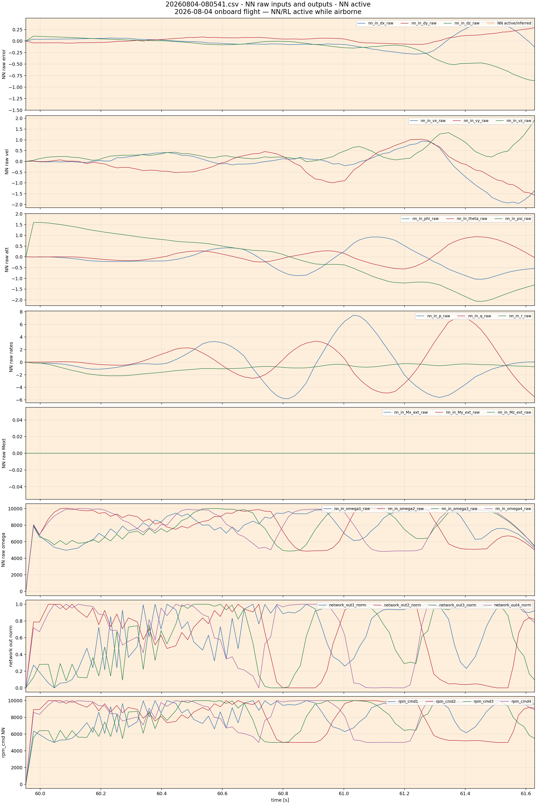
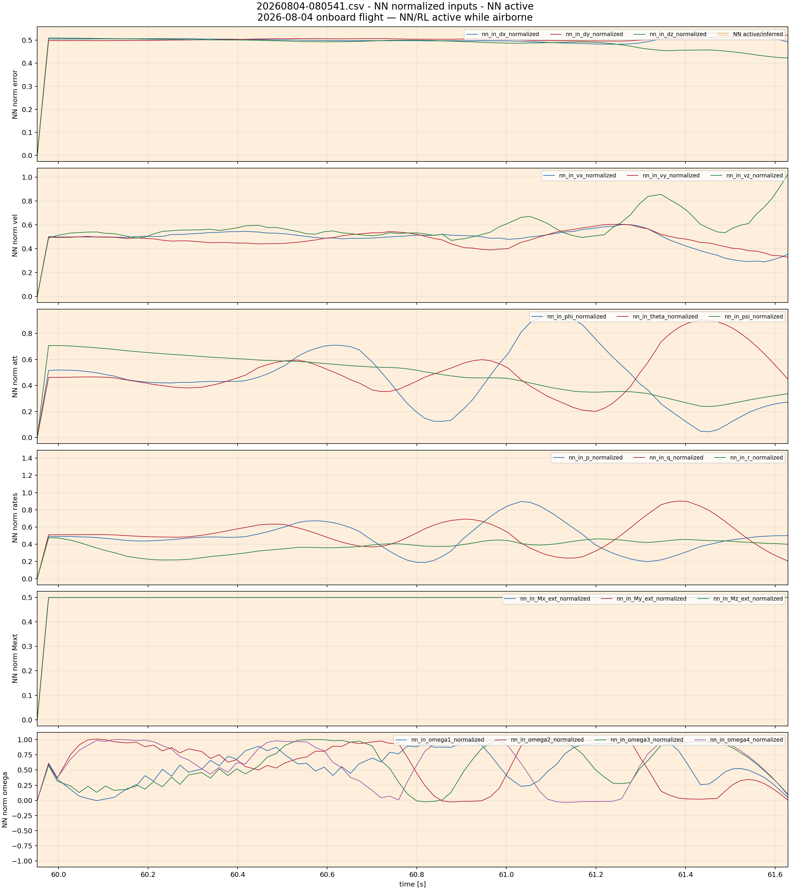
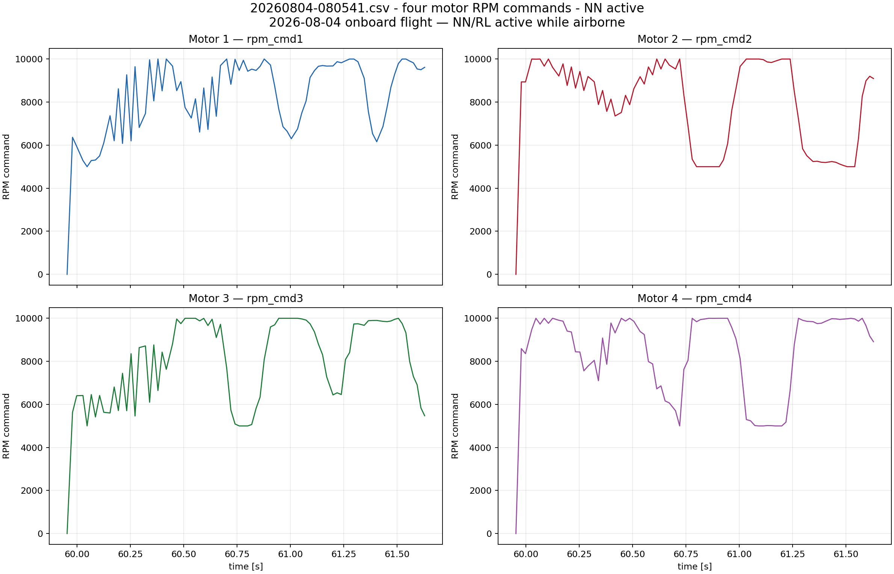
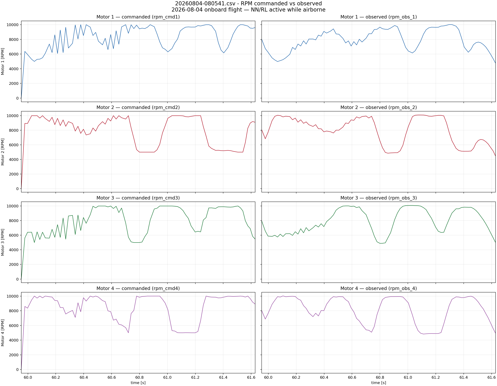

2026-08-04 onboard flight — NN/RL active while airborne
Orange bands mark NN activity. For old logs without nn_enabled, activity is inferred from nn_in_*, network_out*, and rpm_cmd* becoming non-zero.
NN intervals shown: [(59.952766, 61.628532)]
Airborne window uses estimated ground z=0.000 m and 0.10 m clearance.







